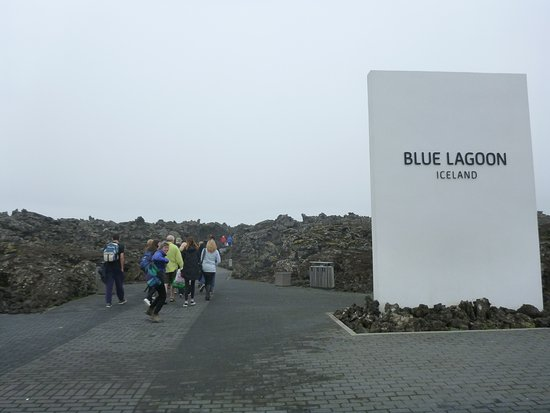

ICELAND
Blue Lagoon

Blue Lagoonは世界最大級の人口温泉の一つです。
温泉だけでなくレストランや宿泊施設などもあります。リンクはこちらです。#Blue Lagoon
ホームページがお洒落なんですよね。見たら絶対行きたくなります笑
僕と友達は、空港を出てレンタカーを借りてからBlue Lagoonに直行しました。
ロンドンからアイスランドまでのフライトだったんですが、疲れるやろうなって思ってたんで、
疲れを取るのと、景気づけに1つ目のスポットに選びました。
アイスランド旅行って思ってるより疲れるので、
旅の疲れを癒すのに最後のスポットとして行くのもありだと思います。
なので、旅の初めか終わりに行く人が多いと思います。
写真内右上のReykjavik(首都)までは車で約1時間の距離です。
アイスランドの運転はめっちゃ簡単です。メインは国道1号線で、国を一周してるだけです笑
なので運転で心配することはあんまりないです。
強いて言うなら、左運転右車線と制限時速が80kmぐらいなだけです笑
あとは急に天気が変わるので、吹雪に巻き込まれるかもしれませんが、、
羊の群れが道路を横断することもあるので、引いてしまわないように！！
道路が一車線しかないので、前の車を抜かすときは反対車線に出て抜かさないとダメです笑
運転事情はざっとこんな感じです笑

Blue Lagoonは事前予約しといた方が確実に中に入れます。
運よく当日にチケットを買える可能性はありますが、
当日チケットを購入できない可能性の方が高いと思います。
と言うのも、チケットは日時予約制で、混み具合(時期、時間帯)によって料金は変動します。
運よく当日にチケットを買える可能性はありますが、
当日チケットを購入できない可能性の方が高いと思います。
と言うのも、チケットは日時予約制で、混み具合(時期、時間帯)によって料金は変動します。